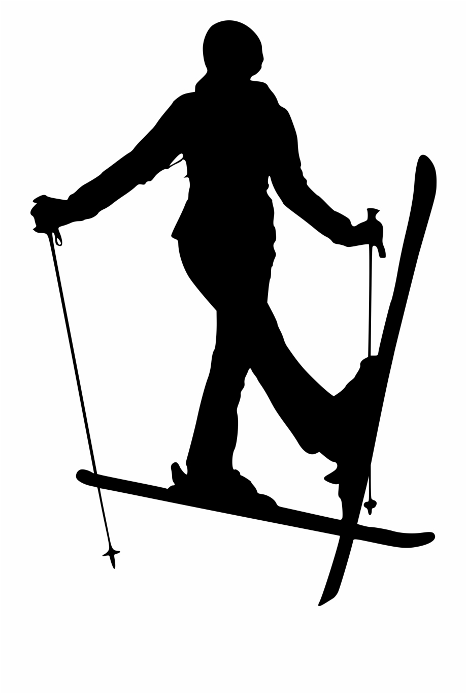

Ski Resorts

ROZA KHUTOR is one of the best ski resorts in Russia, located in the beautiful Krasnaya Polyana area of Sochi. It is a place where you can enjoy winter sports, have an unforgettable vacation with friends or family, and simply breathe in the fresh mountain air.
The resort offers a wide variety of slopes for skiers of all levels. Here you will find slopes for beginners, intermediate skiers, and professionals. There are over 100 kilometers of slopes on the resort that will give you unforgettable sensations and adrenaline.
For those who do not know how to ski or snowboard, the resort has professional instructors who will teach you the basics and help you get comfortable on the slopes.
ARKHYZ is a young and rapidly developing ski resort in Karachay-Cherkessia. It is located in a picturesque mountainous area and offers visitors a wide range of slopes for all levels of fitness. Arkhyz is also famous for its modern hotel complexes, restaurants and entertainment centers
For those who are new to alpine skiing, it is also useful to learn about the different types of slopes and their difficulty. For beginner skiers, the "green" slopes are suitable, with the lowest altitude difference, which ensures safe skiing. You should start with easy runs to gradually build up your skills and confidence on the slope. It is important to remember that everyone has their own individual pace of development, so you should not rush and compare yourself to others.
